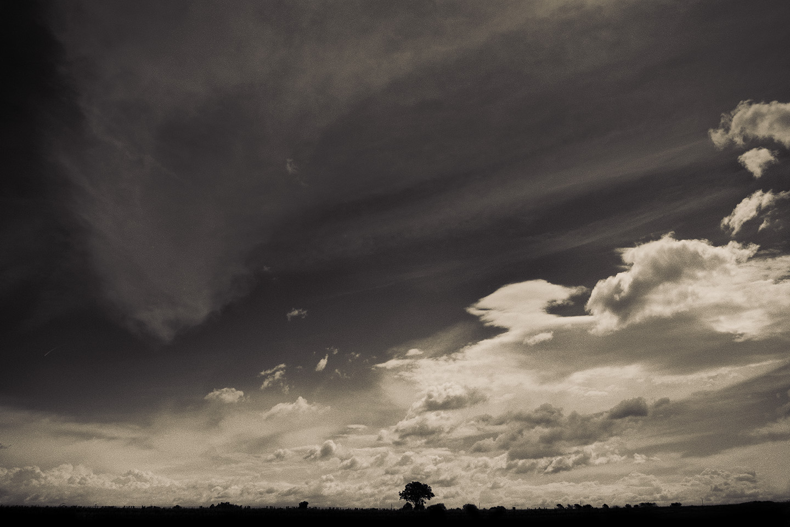
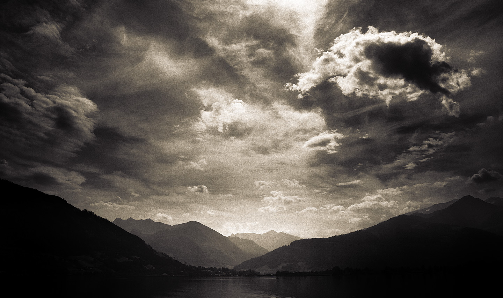
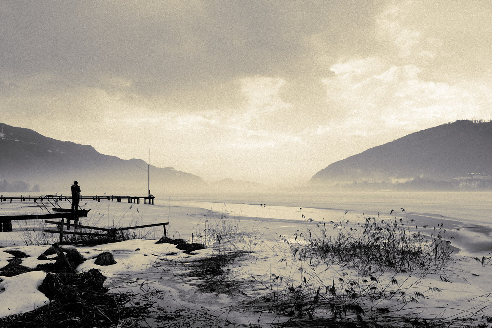
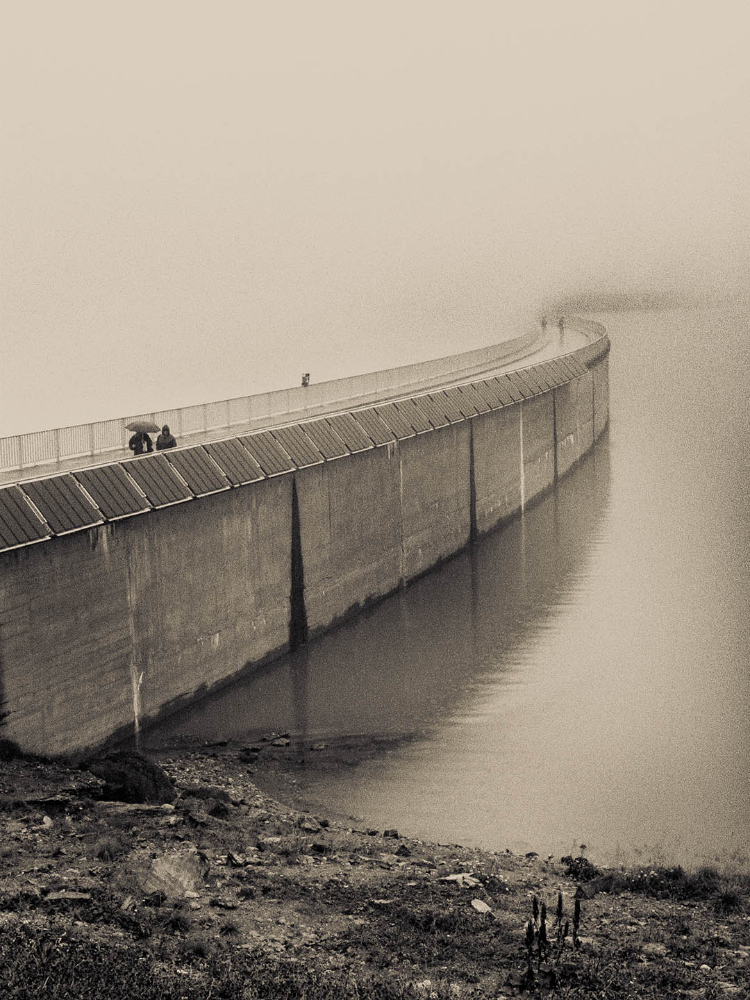
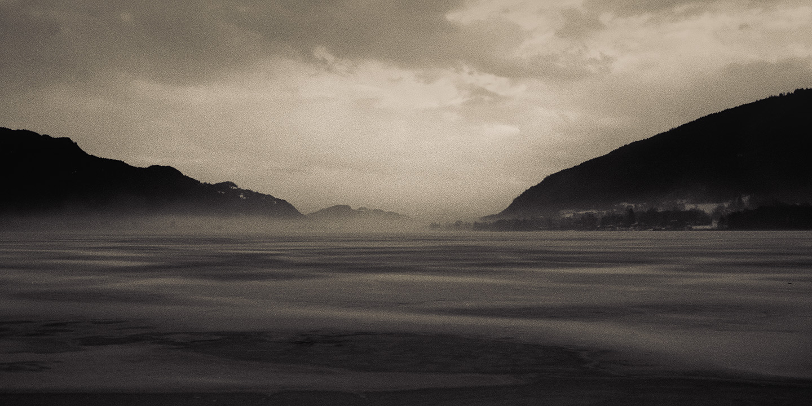
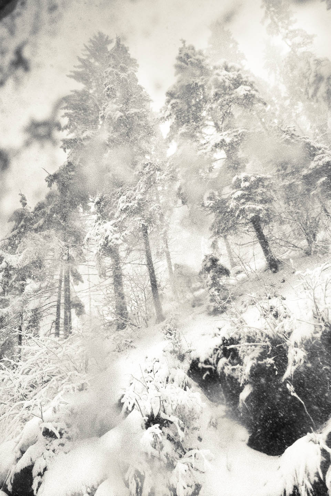
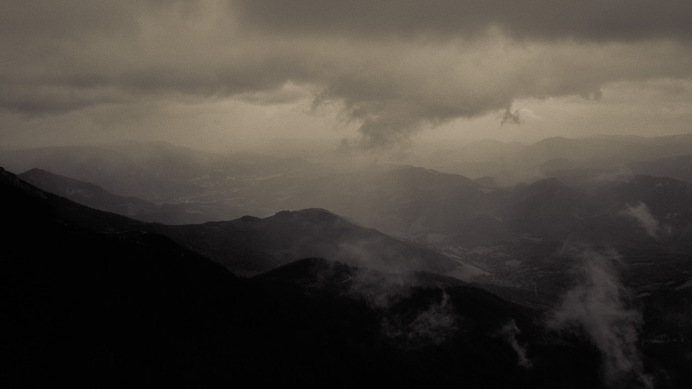
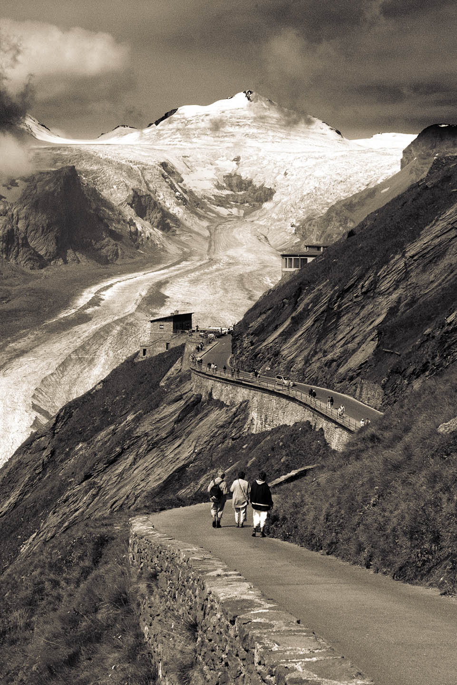
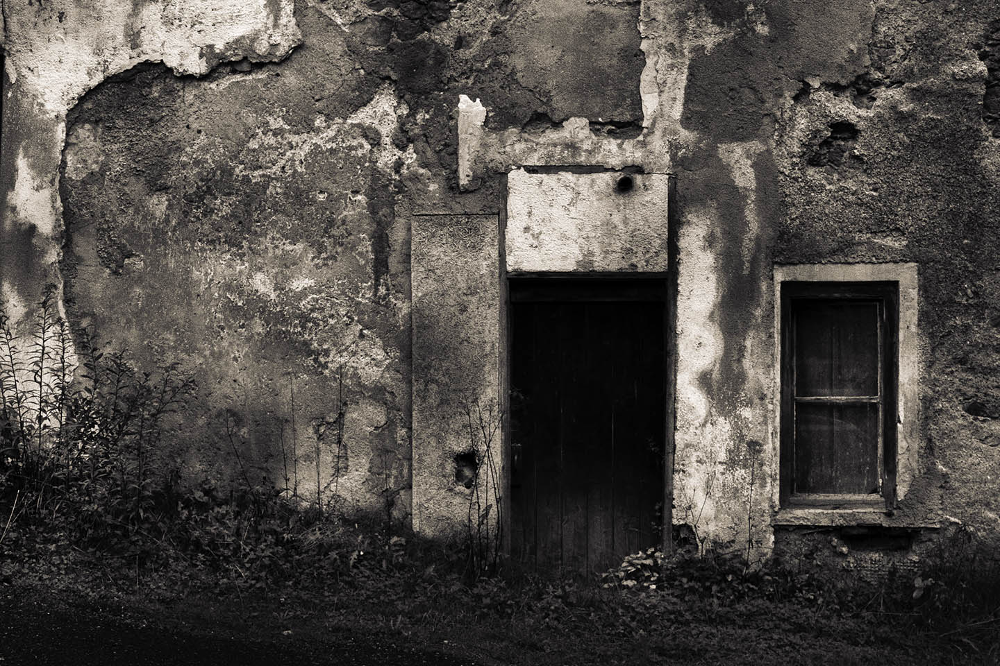

Abandoned — Austria, 2005

Cloud Wars — Austria, 2004

Contemplating — Gerlitzen, Austria, 2005

Dam — Austria, 2004

Evening Reflections — Austria, 2004

Forest — Austria, 2005
Shadow — Vienna, Austria, 2006
Little Boy — Vienna, Austria, 2006
Lone Tree — Austria, 2005

Misty Mountains — Austria, 2004

Mountain Path — Austria, 2004

Ruined Wall — Austria, 2004
Shreds — Gerlitzen, Austria, 2005
Taking Off — Austria, 2006